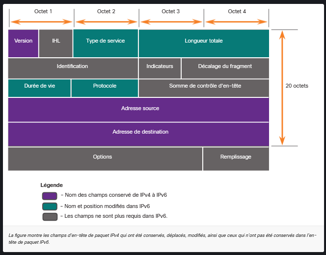
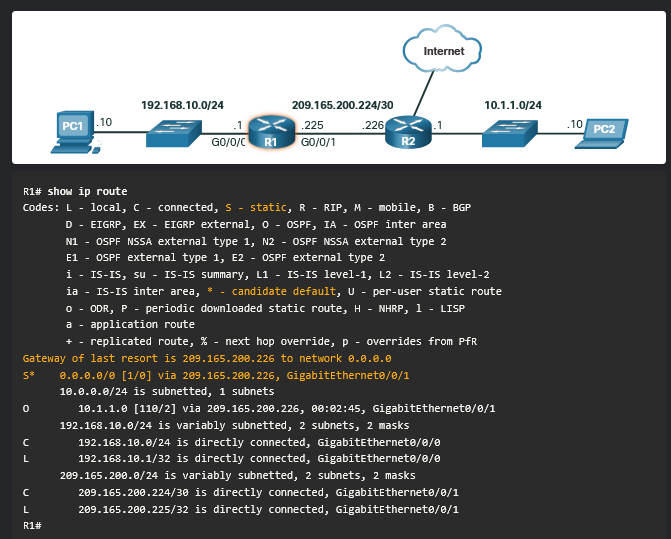

Couche réseau (Layer 3)
Rappel
Modèle OSI vs Modèle TCP/IP
| Modèle OSI (7 couches) | Modèle TCP/IP (4 couches) | Rôle principal |
|---|---|---|
| 7. Application 6. Présentation 5. Session | Application | Fournit les services réseau aux applications (HTTP, FTP, DNS, DHCP). |
| 4. Transport | Transport | Assure la communication de bout en bout et le contrôle de flux (TCP, UDP). |
| 3. Réseau | Internet | Gère l’adressage logique et l’acheminement des paquets (IPv4, IPv6, ICMP, OSPF). |
| 2. Liaison de données 1. Physique | Accès réseau | Gère l’encapsulation, l’adressage physique (MAC) et le transfert de bits sur le support. - cuivre, fibre optique, sans fil |
PDU (Protocol Data Unit) :
Un PDU (Unité de données de protocole) est le nom donné au bloc de données échangé à un niveau spécifique du modèle OSI ou TCP/IP. À chaque passage d’une couche à une autre, des informations de contrôle (en-têtes/remorques) y sont ajoutées ou retirées : c’est l’encapsulation / désencapsulation.
-
Couche 4 (Transport) :
- PDU = Segment (TCP) ou Datagramme (UDP)
-
Couche 3 (Réseau) :
- PDU = Paquet
-
Couche 2 (Liaison de données) :
- PDU = Trame
Introduction
-
Pourquoi ce module ?
- Les SWITCH (layer 2) permettent de faire circuler les trames au sein d’un même réseau local.
- envoyer les donnée à un destinataire situé sur un autre réseau nécessite l’accès aux routeurs et l’utilisation des protocoles de la couche réseau deviennent indispensables pour acheminer les messages de bout en bout.
-
Objectif du module :
- Expliquer comment les routeurs utilisent les protocoles et les services de la couche réseau pour assurer une connectivité de bout en bout.
Couche réseau
1. Rôle et protocoles principaux
-
Rôle :
- Assurer l’acheminement des paquets de manière indépendante .
-
Protocoles :
- Principaux :
- IPv4 et IPv6.
- Autres :
- Routage : OSPF (Open Shortest Path First),
- messages/diagnostics : ICMP (Internet Control Message Protocol).
- Principaux :
2. Les 4 opérations de base de la couche réseau
-
Adressage des terminaux :
- Attribution d’une adresse IP unique à chaque équipement (Host) pour l’identifier.
-
Encapsulation :
- Ajout de l’en-tête IP ( adresses IP source et destination) à la PDU de la couche Transport pour créer un paquet (réalisé par l’émetteur).
-
Routage :
- Sélection du meilleur chemin par les routeurs pour acheminer le paquet à travers les réseaux jusqu’à la destination.
-
Désencapsulation :
- Vérification de l’IP de destination, suppression de l’en-tête IP et transmission de la PDU à la couche Transport (réalisée par le destinataire).
3. Encapsulation IP
3.1. Principe d’encapsulation
-
Fonctionnement :
- L’IP encapsule le segment de la couche transport en lui ajoutant un en-tête IP pour former un paquet IP.
-
Indépendance des couches :
- L’en-tête IP n’altère pas les données transmises (PDU Transport/UDP/TCP reste inchangée).
-
Conservation de l’adressage :
- Les adresses IP source et destination restent identiques de l’émetteur au destinataire (sauf en cas de NAT pour IPv4).
- QUESTION : Est ce le cas la MAC adresse pour la trame ?
COUCHE TRANSPORT (Niveau 4)
+-------------------+-----------------------------+
| En-tête TCP/UDP | Données | <-- PDU Couche 4 : SEGMENT
+-------------------+-----------------------------+
|
| (L'IP encapsule le segment)
v
COUCHE RÉSEAU (Niveau 3)
+-------------------+-----------------------------+-----------------------------+
| En-tête IP | En-tête TCP/UDP | Données |
+-------------------+-----------------------------+-----------------------------+
\_______________________________________________________________________________/
|
PDU Couche 3 : PAQUET IP
4. Caractéristiques du protocole IP
1. Concept général
-
Conception :
- Réduit la surcharge réseau en fournissant uniquement les fonctions basiques de transfert de paquets.
-
Absence de suivi :
- Ne gère ni le suivi ni le contrôle de flux (fonctions déléguées à la couche Transport, ex: TCP).
2. Propriétés principales
2.1. Connectionless (Sans connexion)
Aucune connexion préalable n’est établie avec le destinataire avant l’envoi.
- Fonctionnement
-
Absence de négociation :
- Aucun échange initial de contrôle n’est requis avant la transmission des données.
-
Analogie :
- Similaire à l’envoi d’une lettre postale sans avertir le destinataire au préalable.
-
2.2. Best Effort (Remise au mieux)
La livraison des paquets n’est pas garantie (protocole non fiable).
- Fiabilité et surcharge
-
Réduction du overhead :
- L’absence de champs de suivi dans l’en-tête allège le trafic réseau.
-
Incertitudes d’acheminement :
- L’émetteur ne sait pas si le destinataire est en ligne, ni si le paquet est bien arrivé ou lisible.
-
Pertes de paquets :
- Les paquets peuvent être perdus ou arriver désordonnés ; la gestion de la réémission incombe aux couches supérieures (TCP).
-
2.3. Media Independent (Indépendant du support)
-
Adaptation aux médias
- Flexibilité :
- Les paquets IP peuvent transiter sur différents supports physiques successifs (Ethernet cuivre, fibre optique, Wi-Fi).
- Flexibilité :
-
MTU et Fragmentation
-
MTU (Maximum Transmission Unit) :
- Taille maximale de la PDU acceptée par le support physique, communiquée par la couche liaison de données (Couche 2).
-
Fragmentation IPv4 :
- Si un paquet dépasse la MTU d’un support intermédiaire, un routeur peut le couper en plusieurs paquets (génère de la latence).
-
IPv6 :
- La fragmentation par les routeurs est impossible en IPv6.
-
5. Paquet IPv4
0 1 2 3
0 1 2 3 4 5 6 7 8 9 0 1 2 3 4 5 6 7 8 9 0 1 2 3 4 5 6 7 8 9 0 1
+-+-+-+-+-+-+-+-+-+-+-+-+-+-+-+-+-+-+-+-+-+-+-+-+-+-+-+-+-+-+-+-+
|Version| IHL |Type of Service| Total Length |
+-+-+-+-+-+-+-+-+-+-+-+-+-+-+-+-+-+-+-+-+-+-+-+-+-+-+-+-+-+-+-+-+
| Identification |Flags| Fragment Offset |
+-+-+-+-+-+-+-+-+-+-+-+-+-+-+-+-+-+-+-+-+-+-+-+-+-+-+-+-+-+-+-+-+
| Time to Live | Protocol | Header Checksum |
+-+-+-+-+-+-+-+-+-+-+-+-+-+-+-+-+-+-+-+-+-+-+-+-+-+-+-+-+-+-+-+-+
| Source Address |
+-+-+-+-+-+-+-+-+-+-+-+-+-+-+-+-+-+-+-+-+-+-+-+-+-+-+-+-+-+-+-+-+
| Destination Address |
+-+-+-+-+-+-+-+-+-+-+-+-+-+-+-+-+-+-+-+-+-+-+-+-+-+-+-+-+-+-+-+-+
| Options | Padding |
+-+-+-+-+-+-+-+-+-+-+-+-+-+-+-+-+-+-+-+-+-+-+-+-+-+-+-+-+-+-+-+-+
Example Internet Datagram Header
- Taille de base :
- 20 octets (sans les options).
5.1. En-tête de paquet IPv4
-
Rôle :
- Utilisé pour garantir la livraison du paquet à son prochain arrêt vers la destination finale.
-
Structure :
- Composé de champs contenant des informations binaires examinées par les processus de couche 3.
5.2. Champs d’en-tête des paquets IPv4
Champs principaux :
-
Version :
- Contient la valeur binaire
0100(4 bits) pour identifier IPv4.
- Contient la valeur binaire
-
Services différenciés (DS / ToS) :
- Champ de 8 bits définissant la priorité de la qualité de service (QoS) via DSCP et ECN.
-
Durée de vie (TTL) :
- Valeur de 8 bits évitant les boucles infinies. Décrémentée de 1 par chaque routeur ; à 0, le paquet est rejeté et un message ICMP est envoyé à la source.
-
Protocole :
- Valeur de 8 bits indiquant le protocole de couche supérieure transporté (ex: ICMP = 1, TCP = 6, UDP = 17).
-
Somme de contrôle d’en-tête (Header Checksum) :
- Vérifie la présence d’erreurs dans l’en-tête (recalculée à chaque routeur car le TTL change).
-
Adresse IPv4 source :
- Adresse de 32 bits de l’émetteur (unicast).
-
Adresse IPv4 de destination :
- Adresse de 32 bits du destinataire (unicast, broadcast ou multicast).
Autres champs :
-
Validation/Taille :
IHL(longueur d’en-tête),Longueur totale.
-
Fragmentation :
Identification,Indicateurs(Flags),Décalage du fragment(utilisés par les routeurs pour découper/recomposer un paquet si la MTU est plus petite).
-
Options / Padding : Rarement utilisés.
6. IPv6
6.1. Limites du protocole IPv4
-
Épuisement des adresses :
- Nombre limité d’adresses publiques uniques (environ 4 milliards).
-
Perte de connectivité de bout en bout :
- Le NAT (Network Address Translation) masque l’adresse IP interne, posant problème à certaines applications.
-
Complexité du réseau :
- Le NAT ajoute de la latence et rend le dépannage plus complexe.
6.2. Aperçu d’IPv6
-
Espace d’adressage accru :
- Adresses sur 128 bits (340 sextillions d’adresses) contre 32 bits en IPv4.
-
Traitement simplifié :
- En-tête simplifié avec moins de champs.
-
Fin du NAT requis :
- Chaque équipement peut avoir une adresse IPv6 publique unique, restaurant la connectivité de bout en bout.
6.3. Comparaison des en-têtes IPv4 et IPv6

-
Taille de l’en-tête IPv6 : Longueur fixe de 40 octets.
-
Champs conservés/adaptés :
-
Version(conservé). -
Source AddressetDestination Address(étendus à 128 bits). -
Type of ServiceClasse de trafic. -
ProtocolEn-tête suivant(Next Header). -
TTLLimite de nombre de tronçons(Hop Limit).
-
-
Champs supprimés :
IHL,Checksum,Identification,Flags,Fragment Offset(la fragmentation est gérée différemment et non par les routeurs).
6.4. Champs de l’en-tête de paquet IPv6
0 1 2 3
0 1 2 3 4 5 6 7 8 9 0 1 2 3 4 5 6 7 8 9 0 1 2 3 4 5 6 7 8 9 0 1
+-+-+-+-+-+-+-+-+-+-+-+-+-+-+-+-+-+-+-+-+-+-+-+-+-+-+-+-+-+-+-+-+
|Version| Traffic Class | Flow Label |
+-+-+-+-+-+-+-+-+-+-+-+-+-+-+-+-+-+-+-+-+-+-+-+-+-+-+-+-+-+-+-+-+
| Payload Length | Next Header | Hop Limit |
+-+-+-+-+-+-+-+-+-+-+-+-+-+-+-+-+-+-+-+-+-+-+-+-+-+-+-+-+-+-+-+-+
| |
+ +
| |
+ Source Address +
| (128 bits) |
+ +
| |
+-+-+-+-+-+-+-+-+-+-+-+-+-+-+-+-+-+-+-+-+-+-+-+-+-+-+-+-+-+-+-+-+
| |
+ +
| |
+ Destination Address +
| (128 bits) |
+ +
| |
+-+-+-+-+-+-+-+-+-+-+-+-+-+-+-+-+-+-+-+-+-+-+-+-+-+-+-+-+-+-+-+-+
-
Version :
- Valeur
0110(4 bits) pour IPv6.
- Valeur
-
Classe de trafic :
- Priority/QoS (8 bits, équivalent DS/ToS).
-
Étiquetage de flux :
- Identifie les paquets d’un même flux pour un traitement identique par les routeurs (20 bits).
-
Longueur des données utiles (Payload Length) :
- Taille de la charge utile sans l’en-tête fixe (16 bits).
-
En-tête suivant (Next Header) :
- Identifie le type d’en-tête suivant (protocole L4 ou en-tête d’extension) (8 bits).
-
Limite de nombre de tronçons (Hop Limit) :
- Évite les boucles en décrémentant de 1 à chaque saut ; paquet rejeté à 0 (8 bits).
-
Adresse IPv6 source :
- Adresse de 128 bits de l’émetteur.
-
Adresse IPv6 de destination :
- Adresse de 128 bits du destinataire.
-
En-têtes d’extension :
- Informations optionnelles (sécurité, fragmentation) insérées entre l’en-tête IPv6 et les données.
7. Méthode de routage des hôtes
7.1 Décisions relatives aux transmissions
-
Lieu de création des paquets :
- Toujours créés sur l’hôte source (IPv4 et IPv6).
-
Destinations possibles du trafic :
-
Soi-même :
- Adresse de bouclage (loopback)
127.0.0.1(IPv4) ou::1(IPv6) pour tester la pile TCP/IP locale.
- Adresse de bouclage (loopback)
-
Hôte local :
- Destinataire situé sur le même réseau local (même adresse réseau).
-
Hôte distant :
- Destinataire situé sur un réseau différent (adresse réseau différente).
-
-
Détermination de la destination :
-
IPv4 :
- L’hôte émetteur compare son masque de sous-réseau et son adresse IP avec l’IP de destination.
-
IPv6 :
- Le routeur local annonce le préfixe réseau à tous les hôtes.
-
7.2 Passerelle par défaut (Default Gateway)
-
Rôle :
- Équipement de couche 3 (routeur ou switch L3) permettant d’acheminer le trafic hors du réseau local.
-
Analogie :
- La porte de sortie d’une pièce pour accéder à d’autres pièces.
-
Caractéristiques :
-
Possède une adresse IP locale dans le même sous-réseau que les hôtes.
-
Accepte les données du réseau local et les transfère vers les réseaux distants.
-
Indispensable pour la communication hors du réseau local.
-
7.3 Orientation vers la passerelle par défaut
-
Obtention de l’adresse de passerelle :
-
IPv4 :
- Configurée manuellement ou attribuée dynamiquement via DHCP.
-
IPv6 :
- Annoncée par le routeur ou configurée manuellement.
-
-
Route par défaut :
- Sa configuration crée une route par défaut dans la table de routage de l’hôte pour tout le trafic distant.
7.4 Tables de routage des hôtes
-
Commandes de vérification (Windows) :
route printounetstat -r.
-
Sections principales du résultat :
-
Liste des interfaces :
- Adresses MAC et numéros d’interface (Ethernet, Wi-Fi, Bluetooth).
-
Tableau des routes IPv4 :
- Liste toutes les routes IPv4 connues (connexions directes, réseau local, route par défaut
0.0.0.0).
- Liste toutes les routes IPv4 connues (connexions directes, réseau local, route par défaut
-
Tableau des routes IPv6 :
- Liste toutes les routes IPv6 connues (connexions directes, local, route par défaut
::/0).
- Liste toutes les routes IPv6 connues (connexions directes, local, route par défaut
-
8. Introduction au routage
8.1 Décisions relatives à la transmission de paquets du routeur
-
Rôle des routeurs :
- Périphériques intermédiaires qui relient différents réseaux et utilisent des tables de routage pour acheminer les paquets.
-
Processus lors de la réception d’un paquet :
-
Désencapsulation :
- Le routeur reçoit la trame de couche 2, vérifie les erreurs et retire l’en-tête/remorque Ethernet.
-
Examen de l’adresse :
- Le routeur examine l’adresse IP de destination et cherche la correspondance la plus longue (longest prefix match) dans sa table de routage.
-
Ré-encapsulation et transmission :
- Le paquet est encapsulé dans une nouvelle trame de couche 2 appropriée pour le petit saut suivant (next-hop).
-
8.2 Table de routage du routeur IP
-
Types d’entrées dans la table de routage :
-
Réseaux directement connectés :
- Interfaces actives du routeur configurées avec une adresse IP (ex:
192.168.10.0/24).
- Interfaces actives du routeur configurées avec une adresse IP (ex:
-
Réseaux distants :
- Réseaux non connectés physiquement au routeur, appris via des routes statiques ou des protocoles de routage dynamique (ex:
10.1.1.0/24).
- Réseaux non connectés physiquement au routeur, appris via des routes statiques ou des protocoles de routage dynamique (ex:
-
Route par défaut (Gateway of Last Resort) :
- Utilisée pour transférer les paquets lorsqu’aucune correspondance spécifique n’est trouvée dans la table (ex:
0.0.0.0/0).
- Utilisée pour transférer les paquets lorsqu’aucune correspondance spécifique n’est trouvée dans la table (ex:
-
-
Modes d’apprentissage des réseaux distants :
-
Manuellement :
- Saisie manuelle d’itinéraires statiques par un administrateur.
-
Dynamiquement :
- Échange automatique d’informations de routage entre routeurs via des protocoles dédiés.
-
8.5.3 Routage statique
-
Caractéristiques :
-
Configuration manuelle exigeant de spécifier le réseau distant et l’adresse IP du prochain saut (next-hop).
-
Absence d’adaptation automatique :
- En cas de changement de topologie ou de panne de lien, l’administrateur doit reconfigurer la route manuellement.
-
-
Cas d’usage :
- Petits réseaux, connexions peu complexes, liaisons non redondantes, ou configuration d’une route par défaut vers Internet.
-
Commande Cisco IOS de base :
Router(config)# ip route <réseau_distant> <masque> <ip_prochain_saut|interface>
8.5.4 Routage dynamique
-
Principe :
- Découverte automatique des réseaux distants, maintien des tables à jour et sélection du meilleur chemin sans intervention humaine.
-
Adaptabilité :
- En cas de défaillance d’un lien, le protocole recalcule automatiquement un nouveau meilleur chemin.
-
Protocoles courants :
- OSPF(Open Shortest Path First)
- état de liens (link-state), standard ouvert (IETF), utilisant l’algorithme de Dijkstra pour calculer le chemin le plus court basé sur la bande passante (coût)
- EIGRP(Enhanced Interior Gateway Routing Protocol)
- hybride / vecteur de distance avancé (développé par Cisco), utilisant l’algorithme DUAL pour garantir une convergence très rapide et un chargement équilibré
- IS-IS(Intermediate System to Intermediate System)
- à état de liens (standard ISO/ITU), très similaire à OSPF dans son fonctionnement mais opérant directement sur la couche 2 (au-dessus de la couche liaison de données)
- Infrastructures de grands opérateurs télécoms (Service Providers) et grands réseaux d’interconnexion de datacenters.
- BGP(Border Gateway Protocol).
- à vecteur de chemins (path-vector), utilisé pour échanger des informations d’acheminement entre différents systèmes autonomes (AS) sur Internet.
- Interconnexion entre un réseau d’entreprise et ses fournisseurs d’accès Internet (multihoming), ou routage global sur la dorsale Internet (Internet backbone).
- OSPF(Open Shortest Path First)
8.5.6 Introduction à une table de routage IPv4
-
Commande d’affichage Cisco IOS :
show ip route. -
Codes de provenance des routes courantes :
-
L(Local) :- Adresse IP spécifique attribuée à l’interface du routeur (masque
/32).
- Adresse IP spécifique attribuée à l’interface du routeur (masque
-
C(Connected) :- Réseau directement connecté à l’interface.
-
S(Static) :- Route statique configurée par un administrateur (
S*indique une route statique par défaut candidate).
- Route statique configurée par un administrateur (
-
O(OSPF) :- Route apprise dynamiquement via le protocole OSPF.
-
D(EIGRP) :- Route apprise dynamiquement via le protocole EIGRP.
-
Structure d’une entrée de table de routage
Code de source
|
| Réseau distant Métrique (Distance administrative / Coût)
v | |
V V
O 10.1.1.0/24 [110/2] via 209.165.200.226, 00:02:45, GigabitEthernet0/0/1
^ ^ ^
| | |
Adresse du saut Horodatage Interface de sortie
suivant
-
Distance Administrative (AD)
-
Rôle : Indique la fiabilité de la source (utilisée pour choisir entre plusieurs protocoles).
-
Portée : Locale au routeur.
-
Valeur : De
0(plus fiable) à255(non fiable / ignorée). -
Valeurs clés (Cisco) :
0: Connecté directement1: Statique90: EIGRP interne110: OSPF
-
-
Métrique (Coût)
-
Rôle : Évalue la qualité du chemin au sein d’un même protocole.
-
Portée : Échangée entre routeurs.
-
Valeur : Plus elle est basse, meilleur est le chemin.
-
Critères par protocole :
- OSPF : Bande passante ().
- EIGRP : Bande passante min. + délai (métrique composée).
- RIP : Nombre de sauts (max 15).
- BGP : Attributs (Weight, Local Pref, AS-Path, MED).

-